区块链智能合约数字代币投票系统是采用区块链智能合约技术开发的一种新型的业务系统。区块链具有公开、透明、不可篡改、分布式等等特点，而智能合约可以在信任平台上提供可扩展的编程能力。在此基础上，投票系统充分利用了两者优势，结合加密数字代币，能够充分发挥股权投资者在企业重大决策上的权利使用。
投票系统需要使用以太坊Parity客户端，首先要在使用投票系统的电脑上安装Parity。
打开浏览器，访问https://parity.io/parity.html，选择适合操作系统的客户端。
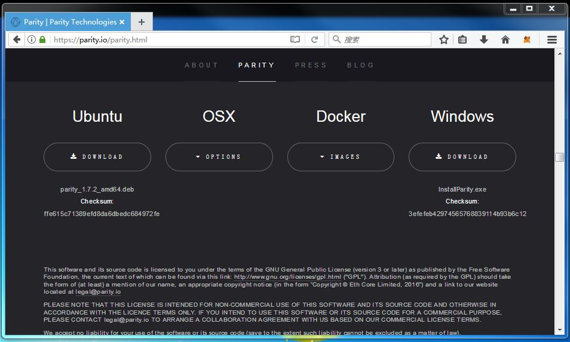
Windows版本的操作系统下载后得到文件"InstallParity.exe"
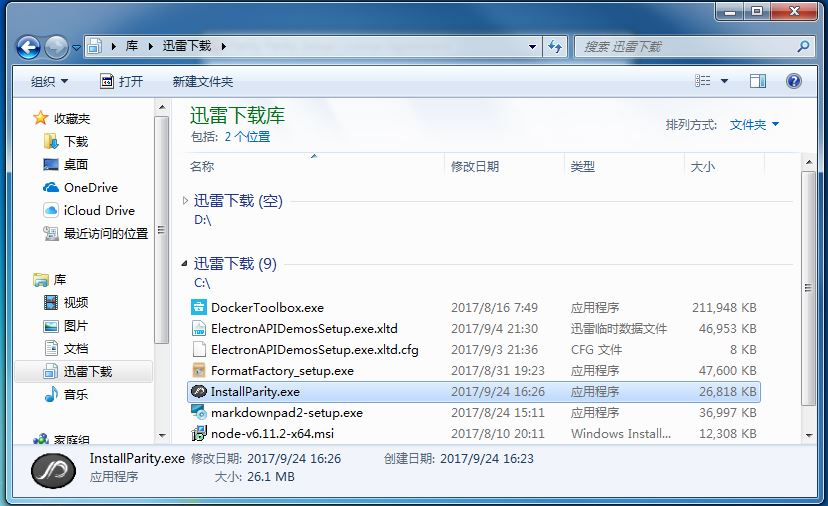
双击，运行安装程序，选择全部默认安装即可。
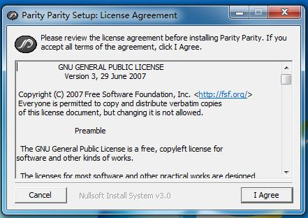
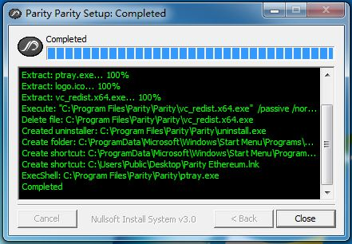
安装结束后，安装程序将在桌面生成Parity Ethereum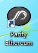 的快捷方式，同时安装程序会自动打开浏览器访问Parity的界面。由于区块链尚未配置，所以直接关闭浏览器即可。
打开资源管理器，在地址栏中输入"%appdata%\Parity\Ethereum\"，打开文件夹。此文件夹根据用户不同，实际对应位置会有所不同。
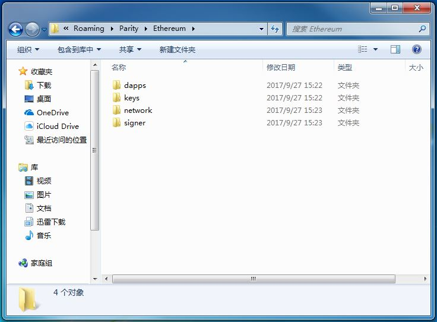
将区块链配置文件config.toml和wallcash.json拷贝到此文件夹下。
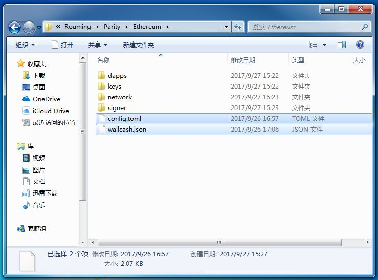
打开Parity安装目录，默认安装路径为"C:\Program Files\Parity\Parity\"，将wallcash.json拷贝到此文件夹下面。
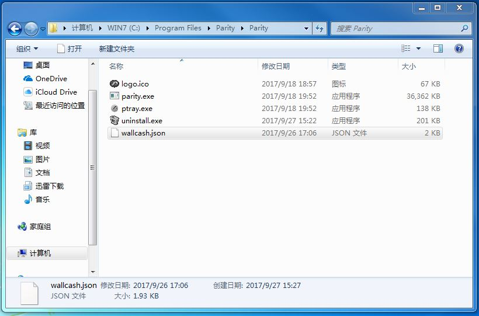
打开桌面的Parity Ethereum的快捷方式，在桌面右下角的通知区域会出现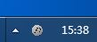图标。双击图标，Parity会自动打开默认浏览器进入Parity的管理界面。
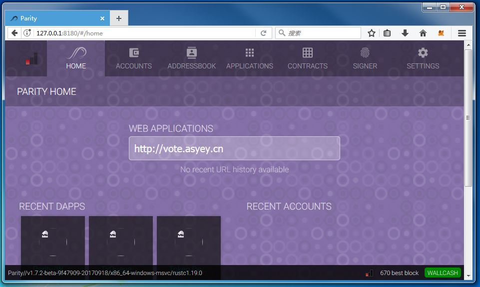
检查管理界面右下角，当best block之前的数字大于0，说明区块链节点已经连接成功。
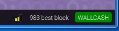
用户可根据向导自行注册账号，并保存密码和恢复账号的助记词。
获得账号后，在HOME界面中间的地址栏中间输入应用网址即可打开去中心化区块链投票应用的界面了。
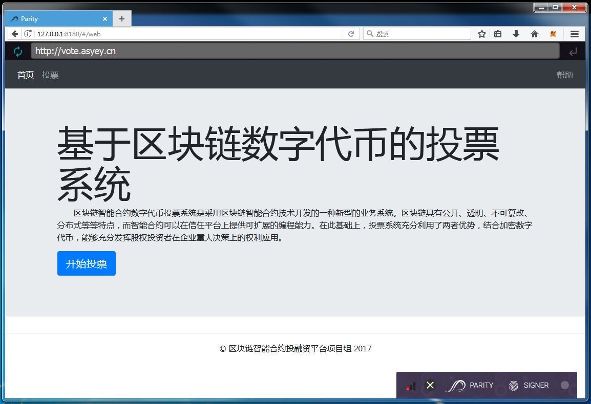
Win7的IE浏览器不支持管理界面，请使用Google Chrome或者Mozilla Firefox浏览器。
Mac的默认配置文件路径为$HOME/Library/Application Support/io.parity.ethereum/。由于此文件夹为隐藏文件，所以需要使用终端访问。另外，config.toml文件第二行中的“wallcash.json”需要修改成带路径的完整名称“$HOME/Library/Application Support/io.parity.ethereum/wallcash.json”。保存之后，即可通过打开“Parity Ethereum.app”来运行区块链节点和管理界面了。
根据向导创建账号后，没有任何代币。请联系项目人员获取代币。